Cynthoni
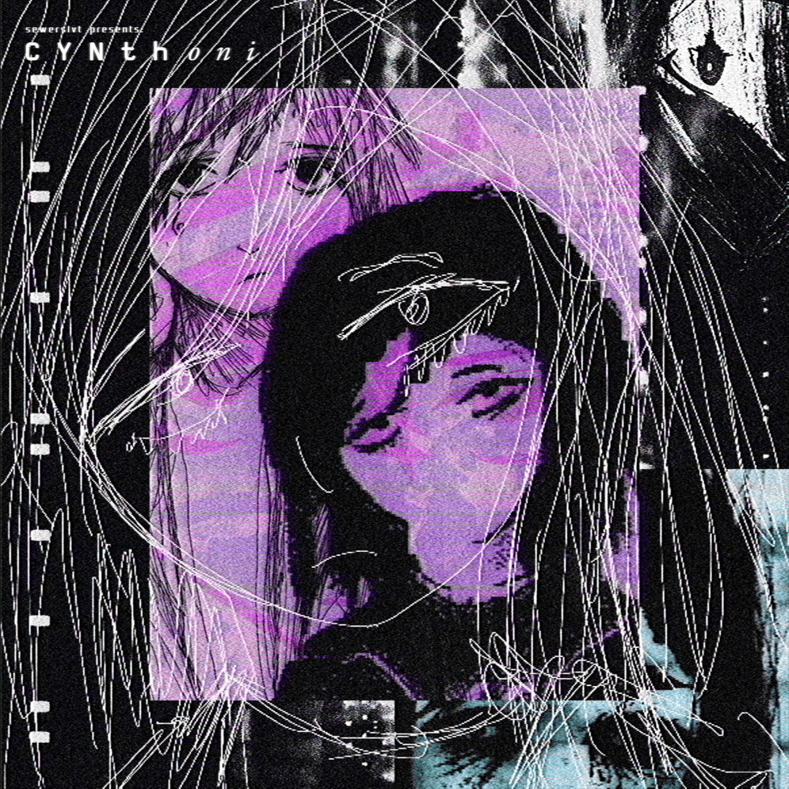 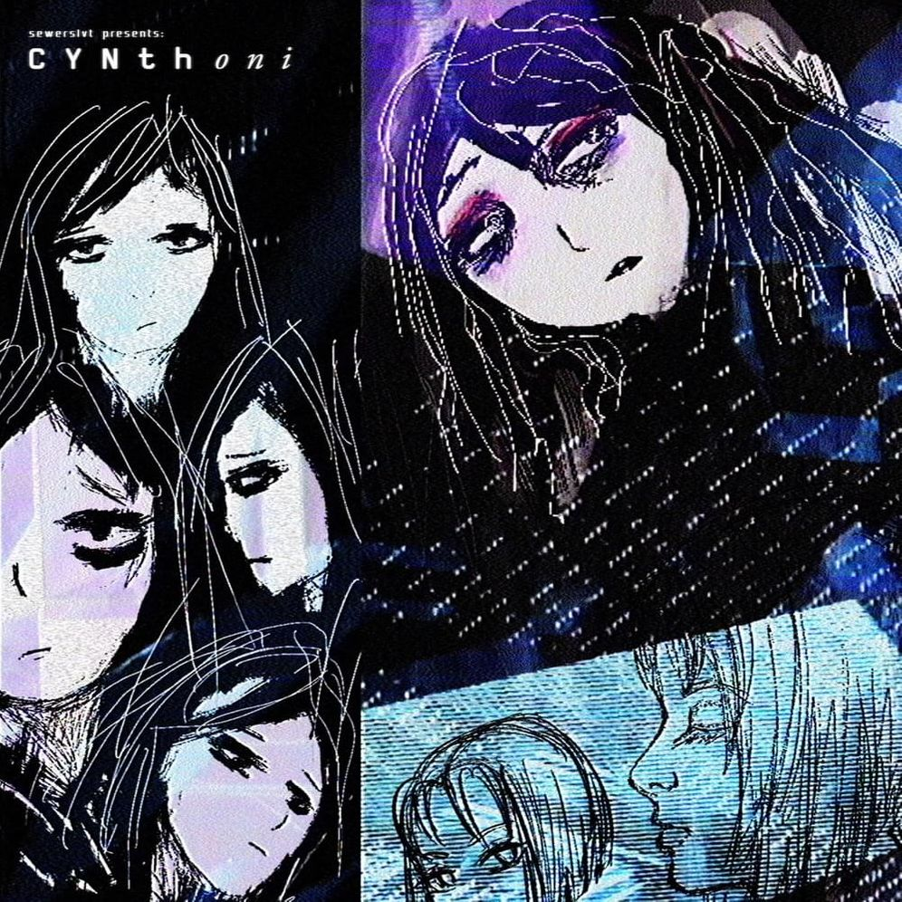 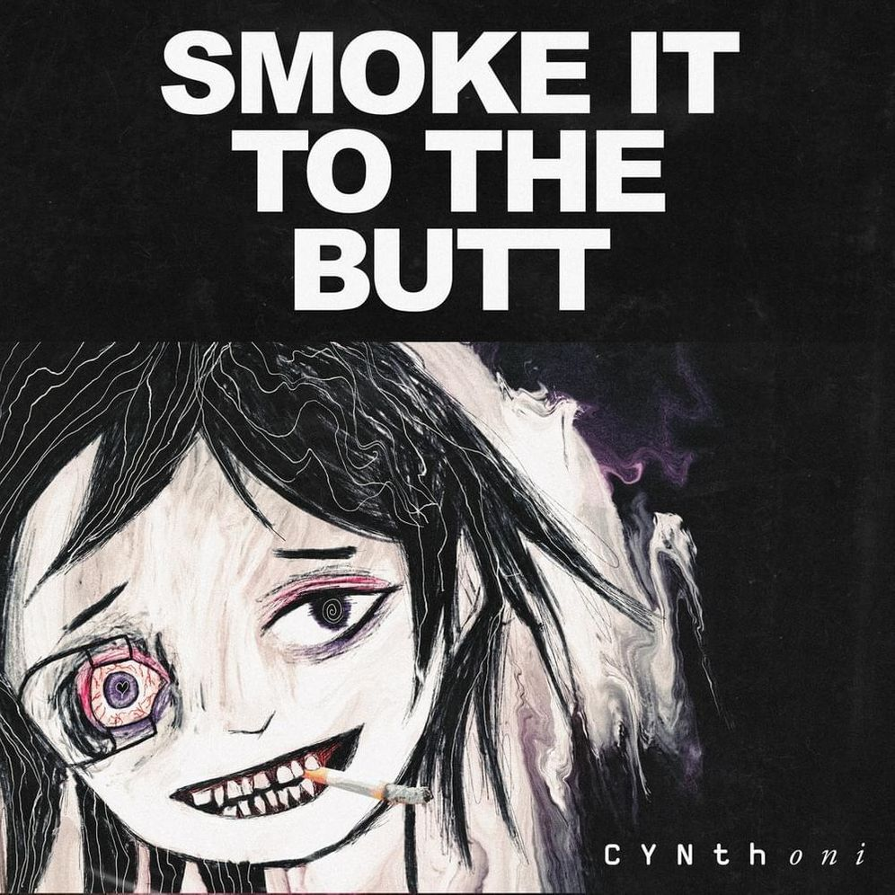 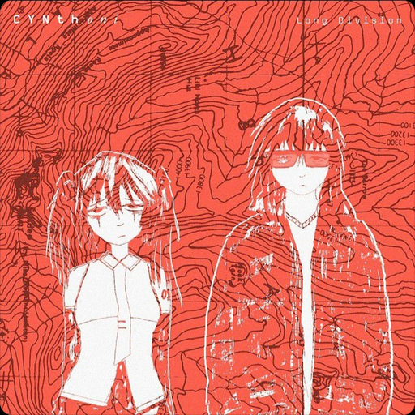

Cynthoni is a project initiated in 2024 by Australian artist Jvne,
better known for their previous project Sewerslvt. Also known as Jvnko, Sewerslvt was
an electronic, jungle breakcore, drum & bass and ambient music project by Australian
artist Jvne. Not much is known about their physical appearance nor their voice as they
usually use anime representations of themselves and TTS voices in personal non-music
videos, with vocal interventions being very rare in their own tracks.
Cvmpliant
 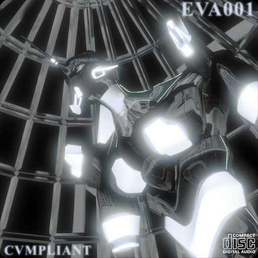
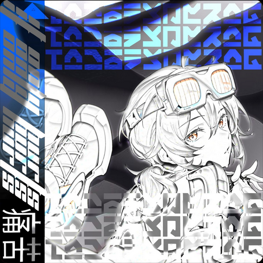
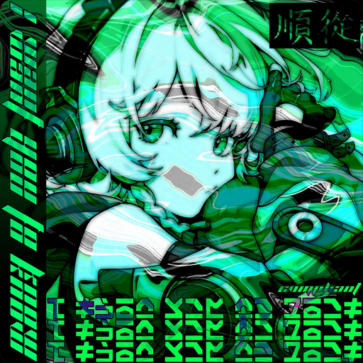
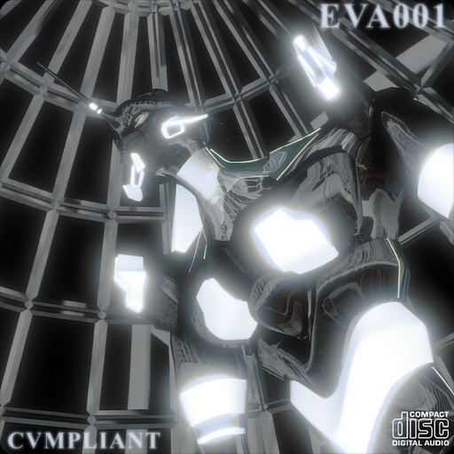
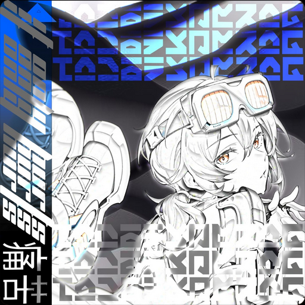
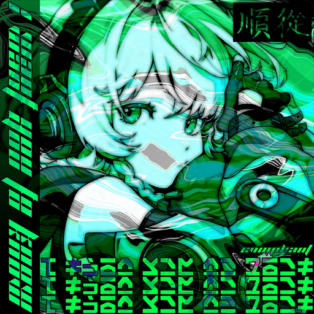

Rising American electronic and drum and bass artist Cvmpliant
is from Atlanta. Cvmpliant's music is a true depiction of the development of the
genre, with a futuristic yet raw feel. His music is distinguished by a fusion of
complex drum and bass beats, throbbing basslines, and ethereal soundscapes that
take listeners to the depths of the dance floor.
svnth
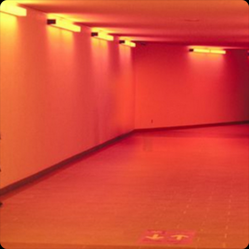 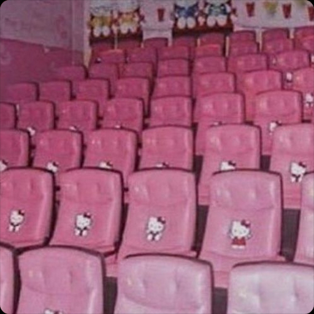 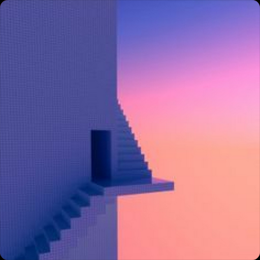 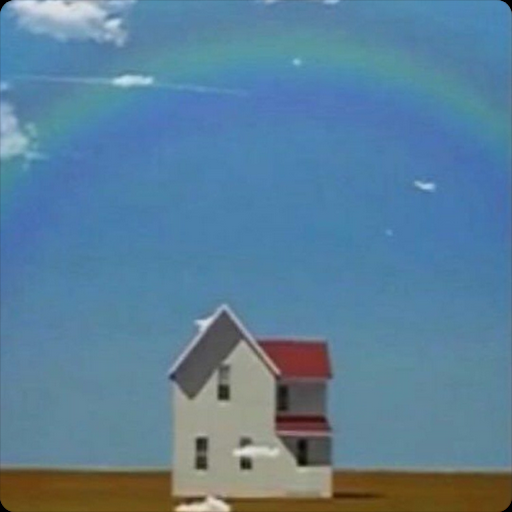 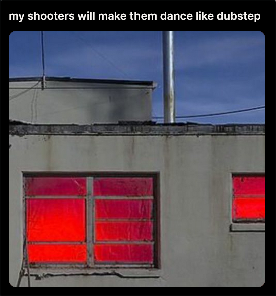 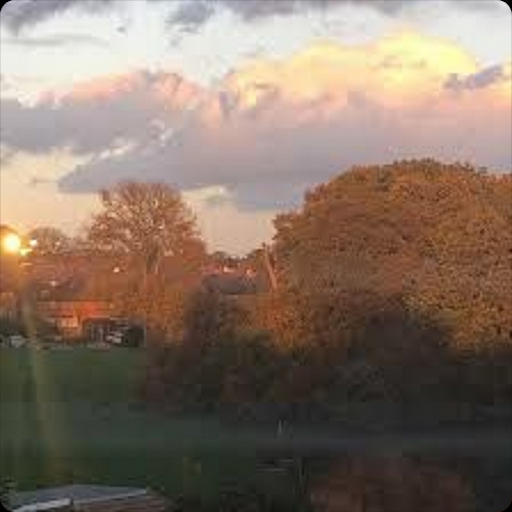 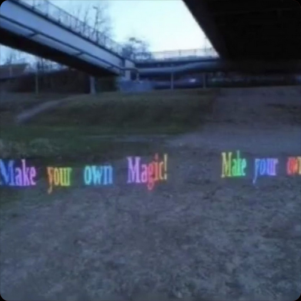 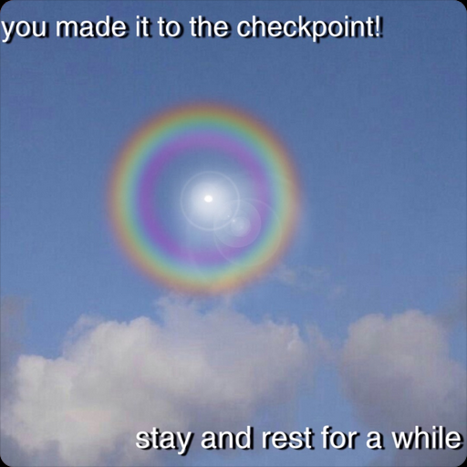
svnth is sxth sns side project from United Kingdom. Their music is an experimental
combination of dariacore, mashup, electro house and trap genres.
leroy/c0ncernn
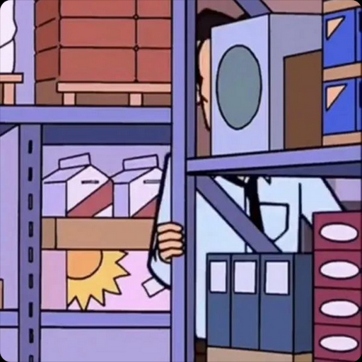 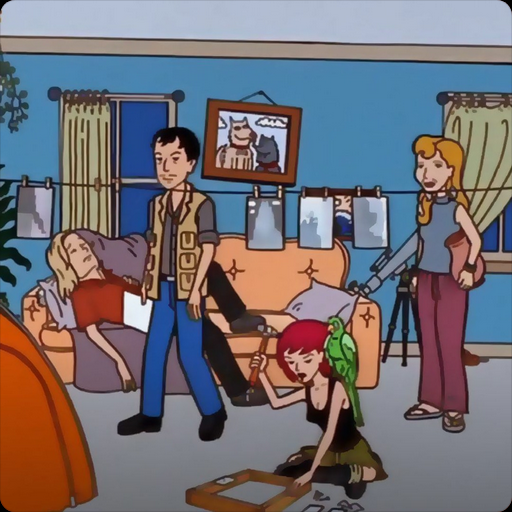
leroy, also known as c0ncernn, is a side project by the artist Jane Remover,
where they make energetic mashup music under the genre dariacore.